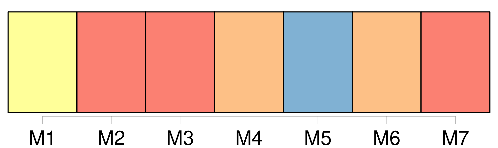
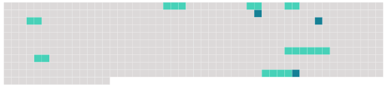

Longueur nb maillons : 10 mentions |
 |
Je me laissai prier, supplier même ; et, quand je la sentis éperdue de curiosité, je lui offris [le saint médaillon] [1 phrases] « [Une relique] !! [1 phrases] [une relique] !! [2 phrases]
Mais une inquiétude l'effleura, qui devint aussitôt une crainte horrible ; et, me fixant au fond des yeux : [3 phrases] Avouer que j'avais acheté [cet ossement] à un marchand courant les rues, c'était me perdre. [1 phrases]
Une idée folle me traversa l'esprit ; je répondis à voix basse, d'un ton mystérieux : [13 phrases]
Puis je m'étais rendu chez un orfèvre et j'avais acheté [un bijou digne de la relique]
Je n'étais pas fâché de lui faire savoir que [le médaillon] m'avait coûté cinq cents francs. [8 phrases]
Elle avait organisé dans sa chambre une sorte de chapelle magnifique pour y placer [cette parcelle de côtelette] [qui] m'avait fait accomplir, croyait -elle, ce divin crime d'amour ; et elle s'exaltait là devant, soir et matin. |
 |
Il est possible de télécharger la ressource sur la page Ortolang |
Si vous avez des questions ou vous voyez des erreurs, merci d'envoyer un mail à silvia.federzoni89@gmail.com |